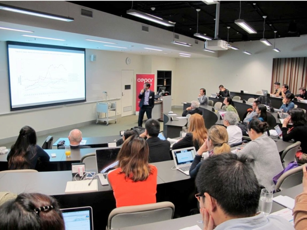

学生参加新南威尔大学举办的“第二届人口老龄化和中国经济年会”
2016年7月21日-7月22日，北京大学人口研究所2015级博士研究生黄国桂，赴澳大利亚悉尼参加于新南威尔大学肯辛通校区举办的“第二届人口老龄化和中国经济年会”，对于中国经济新常态下的经济发展和人口老龄化带来的发展进行讨论和交流，来自美国、澳大利亚、中国香港和印尼的学者进行了分享和互动。

在年会的第一天，五位来自香港科技大学、澳大利亚新南威尔士大学、澳大利亚西澳大利亚大学、中国人民大学和澳大利亚国立大学的教授就中日韩老年人心理抑郁状况、中国的储蓄率和经济增长率、中国农村的养老金体制改革、以中国为例的房产市场和社会保障改革等进行了研究成果展示，并和与会的青年学者、来自澳大利亚和亚洲APRU成员大学的博士学生进行了圆桌讨论。
在年会的第二天，由在老年学、经济学、人口学和公共卫生领域开展相关研究的澳大利亚、美国和亚洲APRU成员大学的博士生进行了各自的最新成果展示，主要集中在中国的老龄化和储蓄率、中国的长期照护制度的筹建、中国老年女性劳动力参与、中国的老年产业发展和中国老年旅游市场开发等方面，来自北京大学人口研究所的黄国桂同学则对于中国的老年贫困问题进行了展示。
在年会的第二天，由在老年学、经济学、人口学和公共卫生领域开展相关研究的澳大利亚、美国和亚洲APRU成员大学的博士生进行了各自的最新成果展示，主要集中在中国的老龄化和储蓄率、中国的长期照护制度的筹建、中国老年女性劳动力参与、中国的老年产业发展和中国老年旅游市场开发等方面，来自北京大学人口研究所的黄国桂同学则对于中国的老年贫困问题进行了展示。